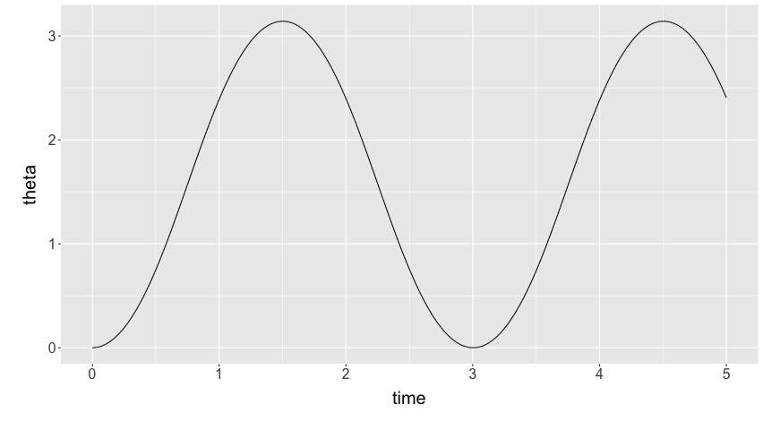
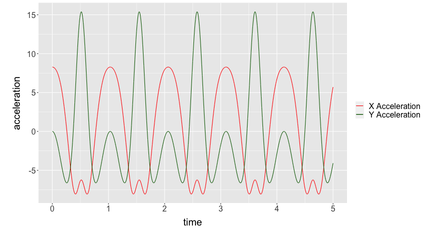
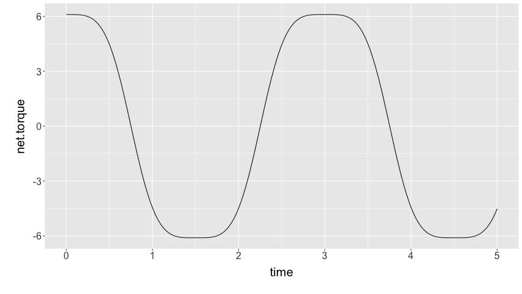
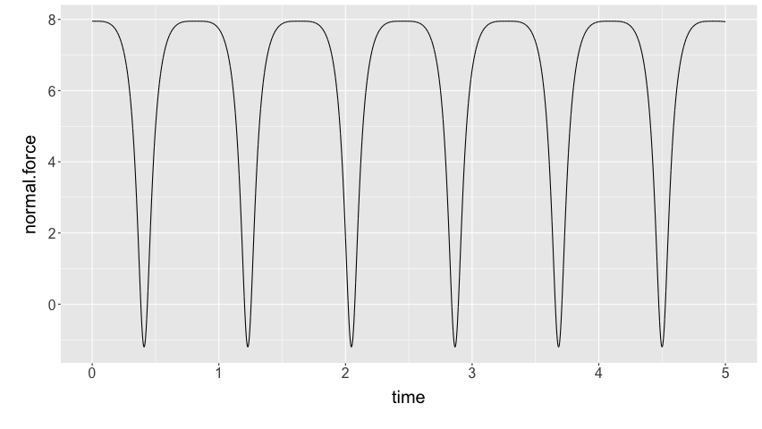

We first set up the basic assumptions and variables.
GRAV <- 9.8 # gravity (m/s^2) MASS <- 1 # mass (kg) I_ROT <- 1 # roational inertia (kg m^2) L1 <- 0.5 # distance from rotation point to CoM (m) L2 <- 1 # distance from rotation ponit to tension (m) PHI <- 0.1 # angle of Ft relative to floor (rad) FT <- 11 # tension force (N) OMEGA <- 0.1 # angle of floor relative to gravity (rad) (because shifted axis)
Additionally, we set the time interval and seed values for time and theta (distance from flat):
dt <- 0.05 t_max <- 5 theta <- 0 time <- 0
First, let's create a function for torque in terms of theta (and the constants above:
net_torque <- function(theta) {
return(L2 * FT * cos(theta + PHI) - L1 * MASS * GRAV * cos(theta - OMEGA))
}
Great. Let's start generating the table! We essentially write a for loop to appends to a few different vectors. Variables appended with c reflect the column vectors that we will put together.
cTime = NULL cTheta = NULL cDDTheta = NULL cDTheta = NULL cTorqueNet = NULL cAccelX = NULL cAccelY = NULL cFFriction = NULL cFNormal = NULL cMuStatic = NULL
Awesome. Let's now run a lovely little for loop to actually populate the values recursively.
for (i in 0:(t_max/dt)) {
# We first populate the time column with the time, theta column with theta
cTime[i] = time
cTheta[i] = theta
torque <- net_torque(theta)
# Given the theta value, we calculate the net torque and set that
cTorqueNet[i] = torque
# Now that we know the net torque, we could know how much the angular
# acceleration is by just dividing out the rotational inertia
thetadotdot <- torque/I_ROT
cDDTheta[i] = thetadotdot
# We could also multiply the theta acceleration by time to get the
# velocity at that point
thetadot <- dt*thetadotdot
cDTheta[i] = thetadot
# We could therefore component-ize the acceleration in theta into
# ax and ay
ax <- -1 * L1 * sin(theta) * thetadotdot
cAccelX[i] = ax
ay <- L1 * cos(theta) * thetadotdot
cAccelY[i] = ay # @mark isn't sin and cos backwards?
# Based on these accelerations, we therefore could calculate the relative
# force of friction and normal force by subtracting the force in that direction
# out of net
ffriction <- FT*sin(PHI) + MASS*GRAV*sin(OMEGA)-MASS*ax
fnormal <- MASS*ay-FT*cos(PHI)+MASS*GRAV*cos(OMEGA)
cFFriction[i] = ffriction
cFNormal[i] = fnormal
# Dividing the friction force by the normal force, of course, will result in
# the (min?) friction coeff
cMuStatic[i] = ffriction/fnormal
# We incriment the time and also increment theta by multiplying the velocity
# by dt to get change in the next increment
time <- dt + time
theta <- dt*thetadot + theta
}
We now put all of this together in a dataframe.
rotating_link <- data.frame(cTime,
cTheta,
cDTheta,
cDDTheta,
cTorqueNet,
cAccelX,
cAccelY,
cFFriction,
cFNormal,
cMuStatic)
names(rotating_link) <- c("time",
"theta",
"d.theta",
"dd.theta",
"net.torque",
"accel.x",
"accel.y",
"friction.force",
"normal.force",
"friction.coeff")
Let's import some visualization tools, etc.
library(tidyverse)
Let's first see the head of this table:
head(rotating_link)
0.05 0.0151738135204899 0.30223707175546 6.0447414351092 6.0447414351092 -0.0458591298077288 3.02202278193676 2.12239419606175 1.82801778360313 1.16103585812956 0.1 0.0302856671082629 0.300933771294696 6.01867542589393 6.01867542589393 -0.0911258682635535 3.00795770360856 2.16766093451758 1.81395270527493 1.19499308235219 0.15 0.0453323556729977 0.299567811961869 5.99135623923738 5.99135623923738 -0.135754638378239 2.99260055378612 2.21228970463226 1.79859555545248 1.23000954713007 0.2 0.0603107462710912 0.298140691681283 5.96281383362567 5.96281383362567 -0.17970188898338 2.97598629612356 2.25623695523741 1.78198129778993 1.2661395257266 0.25 0.0752177808551553 0.296653959525594 5.93307919051187 5.93307919051187 -0.222926177559487 2.95815163397348 2.29946124381351 1.76414663563985 1.30344110708207 0.3 0.090050478831435 0.295109211808371 5.90218423616742 5.90218423616742 -0.265388242554654 2.93913486763189 2.34192330880868 1.74512986929826 1.34197651991963
Before we start graphing, let's set a common graph there.
default.theme <- theme(text = element_text(size=20), axis.title.y = element_text(margin = margin(t = 0, r = 10, b = 0, l = 20)), axis.title.x = element_text(margin = margin(t = 10, r = 0, b = 20, l = 0)))
Cool! We could first graph a function for theta over time.
rotating_link %>% ggplot() + geom_line(aes(x=time, y=theta)) + default.theme

And, similarly, we will graph ax and ay on top of each other:
rotating_link %>% ggplot() + geom_line(aes(x=time, y=accel.x, colour="X Acceleration")) + geom_line(aes(x=time, y=accel.y, colour="Y Acceleration")) + scale_colour_manual("", breaks = c("X Acceleration", "Y Acceleration"), values = c("red", "dark green")) + ylab("acceleration") + default.theme

Let's also plot torque as well.
rotating_link %>% ggplot() + geom_line(aes(x=time, y=net.torque)) + default.theme

And. Most importantly! Let's plot the normal force.
rotating_link %>% ggplot() + geom_line(aes(x=time, y=normal.force)) + default.theme

Obviously, after the normal force becomes negative, this graph stops being useful.